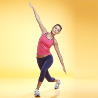

Leg Exercises

Begin with feet shoulder-width apart and the arms down at your sides.
Take a step diagonally back with the right foot.
Then, bend sideways from the waist toward the side where your right leg is stretched out, and reach your right arm up and left arm down and back toward your right calf.
Return arms to starting position to complete 1 rep.
Do 10 reps, then switch sides and repeat.